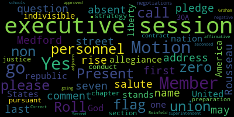
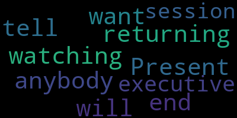
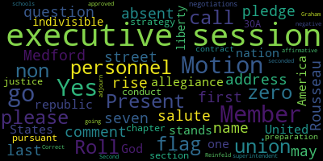
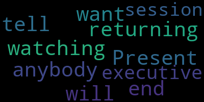

total time: 0.99 minutes
total words: 153

{kind=link}
total time: 0.31 minutes
total words: 37

total time: 0.14 minutes
total words: 22

[Lungo-Koehn]: your first and last name, your Medford street address, your question or comment. Roll call member Rousseau please.
[Ruseau]: Certainly. Member Bramley.
[Graham]: Present.
[Ruseau]: Member Graham.
[Graham]: Here.
[Ruseau]: Member Intoppa. Here. Member Olapade.
[Lungo-Koehn]: Here.
[Ruseau]: Member Rheinfeld.
[Lungo-Koehn]: Here.
[Ruseau]: Member Rousseau present, Mayor Lungo here.
[Lungo-Koehn]: Present, seven present, zero absent. If we all may rise to salute the flag. I pledge allegiance to the flag of the United States of America, to the republic for which it stands, one nation under God, indivisible, with liberty and justice for all. and we have executive session pursuant to chapter 30A, section 21.2, to conduct strategy and preparation with non-union personnel or contract negotiations with non-union personnel, which is our superintendent of schools. Is there a motion to go into executive session? Motion to go into executive session. Second. Member Reinfeld, seconded by Member Graham. Roll call, please.
[Ruseau]: Member Braley? Yes. Member Graham?
[Lungo-Koehn]: Yes.
[Ruseau]: Member Intoppa? Yes. Member Olapade? Yes. Member Rheinfeld?
[Lungo-Koehn]: Yes.
[Ruseau]: Members of the guest, Mayor Lungo-Koehn.
[Lungo-Koehn]: Yes, I'm in the affirmative, zero in the negative. Motion to go into executive session has been approved.
[Graham]: Do we want to tell anybody who's watching that we will not be returning at the end of executive session?
[Lungo-Koehn]: Correct, we are going into executive session and we'll adjourn in executive session.
|
total time: 0.99 minutes total words: 153  |
total time: 0.31 minutes total words: 37 |
total time: 0.14 minutes total words: 22  |
|
{kind=link}